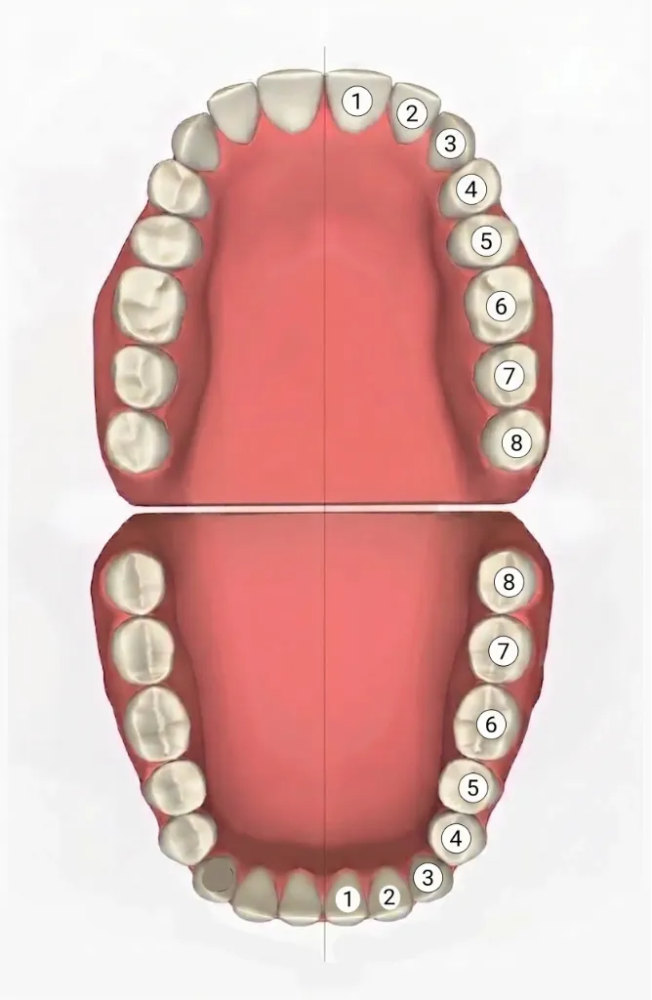

علم تشريح الأسنان Dental Anatomy هو العلم المعني بدراسة مورفولوجيا وشكل وتفاصيل الأسنان في الإنسان Morphology ، ويشمل دراسة 5 عناصر رئيسية:
هو الجزء العلوي الظاهر والبارز من السن داخل الفم فوق خط اللثة، والمغطى بطبقة المينا البيضاء الصلبة.
هو الجزء السفلي المدفون داخل عظم الفك والمثبت داخل اللثة، ومسؤول عن تثبيت السن بقوة في مكانه.
قبل دراسة الأسنان المفردة، يجب معرفة معالم الوجه والفم المحيطة بها Oral Cavity :
عظم الفك العلوي الثابت في الجمجمة، ويحمل الأسنان العلوية (Maxillary teeth).
عظم الفك السفلي المتحرك، ويحمل الأسنان السفلية (Mandibular teeth).
تتراص وتنتظم الأسنان في الفم داخل قوسين منحنيين يُسميان القوسين السنيين Dental Arch :
يمر في منتصف الوجه رأسياً خط تخيلي يُسمى خط المنتصف Midline ، ويقوم بتقسيم كل قوس سني إلى نصفين متساويين تماماً (نصف أيمن ونصف أيسر).

مقارنة مباشرة لجميع الأسنان بالصوت، الوظيفة، والخلافة السنية
خلق الله الأسنان في شكل 4 عائلات رئيسية تنقسم وظيفياً وتشريحياً إلى مجموعتين:
الإنسان كائن ثنائي التسنين (Diphyodont)، يمر خلال حياته بثلاث مراحل وفترات تسنين واضحة ومحددة زمنياً:
المعادلة السنية
Dental Formula
هي تعبير حسابي مختصر يصف عدد وتوزيع أنواع الأسنان في نصف واحد من تجويف الفم (فوق وتحت):
"It describes the dentition in one half of the oral cavity (upper & lower)".
تفسير الرموز:
تفسير الرموز:
هذا الجزء هو من أهم النقاط المحورية في امتحانات تشريح الأسنان (صفحة 26 إلى 28 بالسلايدز):
جميع الأسنان اللبنية بدون استثناء تُسمى (Predecessors)، لأنها تسبق الأسنان الدائمة وتتساقط لتترك مكانها للأسنان الدائمة.
هي الأسنان الدائمة التي تخرج مكان سن لبني كان موجوداً قبلها وسقط، وهي تشمل:
الأضراس الدائمة (Permanent Molars): لا يسبقها أي سن لبني على الإطلاق، بل تبزغ خلف الأسنان اللبنية في الفك مع نموه، ولذلك تسمى أسنان غير بديلة (Non-succedaneous).
استمع للنطق الصوتي الأمريكي الدقيق لأي مصطلح ورد في الصفحات 1 إلى 29 بمجرد الضغط على زر الصوت:
| المصطلح بالإنجليزي | النطق | المعنى بالعربية | التوضيح في المحاضرة |
|---|---|---|---|
| Dental Anatomy | تشريح الأسنان | علم دراسة شكل وهيئة ووظيفة الأسنان | |
| Crown | تاج السن | الجزء الظاهر من السن فوق اللثة | |
| Root | جذر السن | الجزء المدفون داخل عظم الفك للتثبيت | |
| Maxilla | الفك العلوي | عظم الفك العلوي الثابت | |
| Mandible | الفك السفلي | عظم الفك السفلي المتحرك | |
| Dental Arch | القوس السني | قوس اصطفاف الأسنان العلوي أو السفلي | |
| Midline | خط المنتصف | الخط الفاصل بين نصفي الفك الأيمن والأيسر | |
| Quadrant | الربع الفمي | ربع تجويف الفم (4 أرباع في الفم) | |
| Oral Vestibule | دهليز الفم | الفراغ الواقع بين الأسنان والشفاه/الخدود | |
| Hard Palate | الحنك الصلب | سقف الفم العظمي الأمامي | |
| Soft Palate | الحنك الرخو | الجزء العضلي الخلفي من سقف الحلق | |
| Uvula | اللهاة | الزائدة اللحمية المتدلية نهاية الحلق | |
| Lingual Frenum | لجام اللسان | طية نسيجية تربط أسفل اللسان بأرضية الفم | |
| Gingiva | اللثة | النسيج الوردي المحيط بأعناق الأسنان | |
| Incisors | القواطع | الأسنان الأمامية كالإزميل لقطع الطعام (2 بكل ربع) | |
| Canines | الأنياب | أسنان مدببة بنتوء واحد لتمزيق الطعام (1 بكل ربع) | |
| Premolars | الضواحك | توجد في الدائمة فقط، تحل مكان الأضراس اللبنية | |
| Molars | الأضراس / الطواحن | أسنان خلفية عريضة متعددة النتوءات لطحن الطعام | |
| Primary Dentition | التسنين اللبني المؤقت | من 6 أشهر لـ 6 سنوات، عددها 20 سناً | |
| Mixed Dentition | التسنين المختلط | من 6 إلى 12 سنة (مرحلة البطة القبيحة) | |
| Permanent Dentition | التسنين الدائم | بعد سن 12 سنة، عددها 32 سناً | |
| Dental Formula | المعادلة السنية | وصف لتوزيع الأسنان في نصف تجويف الفم | |
| Predecessors | الأسلاف (الأسنان السابقة) | كل الأسنان اللبنية أسلاف لأنها تسقط ليخلفها غيرها | |
| Succedaneous Teeth | الأسنان البديلة / الخلفية | الأسنان الدائمة التي تحل محل أسنان لبنية سابقة | |
| Non-succedaneous Teeth | الأسنان غير البديلة | الأضراس الدائمة لأنها تبزغ دون أن يسبقها سن لبني |